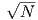
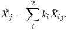
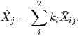
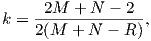
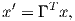
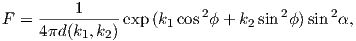
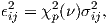
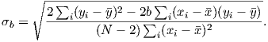
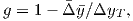

Chapters 5 and 7 discussed various hysteresis parameters and Chapters 11 and 12
developed the major features of paleomagnetic directional statistics. Here we go
over some aspects in greater detail.
A typical hysteresis experiment involves determination of a hysteresis loop and
frequently also a back-field curve (see Figure C.1). Processing of the data in the
PmagPy software package (see, e.g., Example for hysteresis_magic.py)
proceeds as follows:
- Sometimes the descending and ascending hysteresis loops do not
close because of instrument drift (see Figure C.1a). Ordinarily, the
experiment should be re-done, but for small differences, we force the
loops to close by subtracting the difference, interpolated from the
maximum difference at the maximum field (Bmax) to a zero difference
at the minimum field (Bmin).
- After closing the loops, we calculate the best-fit line to the M,B data
for the portion within 70% of ±Bmax, averaging data from both the
ascending and descending loops. A difference in the absolute value
of the y-intercepts for the ascending and descending loops indicates
a vertical offset of the data, which is adjusted such that the two
intercepts are equal. The average slope is the high-field susceptibility
(χhf), which is subtracted off. The data after these steps are shown
as the dashed line in Figure C.1. The maximum magnetization after
adjusting for the χhf is the saturation magnetization Ms.
Table C.1: Summary of hysteresis parameters.
- Coercivity (μoHc) is the field at which M = 0. We estimate this by finding
the values of B between which M switches sign for both the ascending and
descending loops (after adjustment), calculate a line and evaluate
the B for which M = 0. The coercivity is the average of the two
estimates.
- We fit a spline to the adjusted ascending and descending loops and
resample the loops at even intervals of B (usually 10 mT intervals). The
ΔM curve shown in Figure C.1b is the difference between these two
interpolated curves, averaging the data for negative and positive B. The
saturation remanence Mr is the value of the ΔM curve at B = 0. The
coercivity of remanence (μoHcr in Table C.1) is the field for which ΔM is
half the value of Mr. This is the “ΔM” method of coercivity of remanence
calculation (see Chapter 5).
- If there are “back-field” IRM data as in Figure C.1b, the coercivity of
remanence can be estimated by finding (through interpolation) the applied
field which reduces the saturation remanence (Mr) to zero. This is the
“back field” method.
Table C.2: Critical values of Ro for a random distribution [Watson, 1956.]
|
|
|
|
|
|
| N | 95% | 99% | N | 95% | 99% |
|
|
|
|
|
|
| 5 | 3.50 | 4.02 | 13 | 5.75 | 6.84 |
| 6 | 3.85 | 4.48 | 14 | 5.98 | 7.11 |
| 7 | 4.18 | 4.89 | 15 | 6.19 | 7.36 |
| 8 | 4.48 | 5.26 | 16 | 6.40 | 7.60 |
| 9 | 4.76 | 5.61 | 17 | 6.60 | 7.84 |
| 10 | 5.03 | 5.94 | 18 | 6.79 | 8.08 |
| 11 | 5.29 | 6.25 | 19 | 6.98 | 8.33 |
| 12 | 5.52 | 6.55 | 20 | 7.17 | 8.55 |
|
|
|
|
|
|
| |
- Calculate Ri, and ki where i = 1,2 for the two data sets with N1,N2
samples using Equations 11.6 and 11.8.
- Calculate xij (where j = 1,3 for the three axes) using Equation 11.7.
- Calculate Xij = Rixij.
- Find the weighted means for the two data sets:

- Calculate the weighted overall resultant vector Rw by
 and the weighted sum Sw by,

and the weighted sum Sw by,

- Finally, Watson’s V w is defined as

- Calculate M directed lines (two in our case) and N great circles (one
in our case) using principal component analysis (see Chapter 9) or
Fisher statistics.
- Assume that the primary direction of magnetization for the samples
with great circles lies somewhere along the great circle path (i.e., within
the plane).
- Assume that the set of M directed lines and N unknown directions
are drawn from a Fisher distribution.
- Iteratively search along the great circle paths for directions that
maximize the resultant vector R for the M + N directions.
- Having found the set of N directions that lie along their respective
great circles, estimate the mean direction using Equation 11.7 and κ
as:
 The cone of 95% confidence about the mean is given by:
The cone of 95% confidence about the mean is given by:
![′
cosα95 = 1- N----1,[(1-)1∕(N′-1) - 1],
kR p](WebBook3515x.png) where N′ = M + N∕2 and p = .02
where N′ = M + N∕2 and p = .02
Table C.3: Maximum likelihood estimators of k1,k2 in the Bingham
distribution for given eigenvalues ω1,ω2. Data from Mardia and Zemroch
(1977). Upper (lower) number is k1(k2)
|
|
|
|
|
|
|
|
|
|
|
|
|
|
|
|
|
| ω1 | 0.02 | 0.04 | 0.06 | 0.08 | 0.10 | 0.12 | 0.14 | 0.16 | 0.18 | 0.20 | 0.22 | 0.24 | 0.26 | 0.28 | 0.30 | 0.32 |
|
|
|
|
|
|
|
|
|
|
|
|
|
|
|
|
|
| ω2 |
| 0.02 | -25.55 |
| | -25.55 |
| 0.04 | -25.56 | -13.11 |
| | -13.09 | -13.11 |
| 0.06 | -25.58 | -13.14 | -9.043 |
| | -8.996 | -9.019 | -9.043 |
| 0.08 | -25.6 | -13.16 | -9.065 | -7.035 |
| | -6.977 | -6.999 | -7.020 | -7.035 |
| 0.10 | -25.62 | -13.18 | -9.080 | -7.042 | -5.797 |
| | -5.760 | -5.777 | -5.791 | -5.798 | -5.797 |
| 0.12 | -25.63 | -13.19 | -9.087 | -7.041 | -5.789 | -4.917 |
| | -4.923 | -4.934 | -4.941 | -4.941 | -4.933 | -4.917 |
| 0.14 | -25.64 | -13.20 | -9.087 | -7.033 | -5.773 | -4.896 | -4.231 |
| | -4.295 | -4.301 | -4.301 | -4.294 | -4.279 | -4.258 | -4.231 |
| 0.16 | -25.65 | -13.20 | -9.081 | -7.019 | -5.752 | -4.868 | -4.198 | -3.659 |
| | -3.796 | -3.796 | -3.790 | -3.777 | -3.756 | -3.729 | -3.697 | -3.659 |
| 0.18 | -25.65 | -13.19 | -9.068 | -6.999 | -5.726 | -4.836 | -4.160 | -3.616 | -3.160 |
| | -3.381 | -3.375 | -3.363 | -3.345 | -3.319 | -3.287 | -3.249 | -3.207 | -3.160 |
| 0.20 | -25.64 | -13.18 | -9.05 | -6.974 | -5.694 | -4.799 | -4.118 | -3.570 | -3.109 | -2.709 |
| | -3.025 | -3.014 | -2.997 | -2.973 | -2.942 | -2.905 | -2.863 | -2.816 | -2.765 | -2.709 |
| 0.22 | -25.63 | -13.17 | -9.027 | -6.944 | -5.658 | -4.757 | -4.071 | -3.518 | -3.053 | -2.649 | -2.289 |
| | -2.712 | -2.695 | -2.673 | -2.644 | -2.609 | -2.568 | -2.521 | -2.470 | -2.414 | -2.354 | -2.289 |
| 0.24 | -25.61 | -23.14 | -8.999 | -6.910 | -5.618 | -4.711 | -4.021 | -3.463 | -2.993 | -2.584 | -2.220 | -1.888 |
| | -2.431 | -2.410 | -2.382 | -2.349 | -2.309 | -2.263 | -2.212 | -2.157 | -2.097 | -2.032 | -1.963 | -1.888 |
| 0.26 | -25.59 | -13.12 | -8.966 | -6.870 | -5.573 | -4.661 | -3.965 | -3.403 | -2.928 | -2.515 | -2.146 | -1.809 | -1.497 |
| | -2.175 | -2.149 | -2.117 | -2.078 | -2.034 | -1.984 | -1.929 | -1.869 | -1.805 | -1.735 | -1.661 | -1.582 | -1.497 |
| 0.28 | -25.57 | -13.09 | -8.928 | -6.827 | -5.523 | -4.606 | -3.906 | -3.338 | -2.859 | -2.441 | -2.066 | -1.724 | -1.406 | -1.106 |
| | -1.939 | -1.908 | -1.871 | -1.828 | -1.779 | -1.725 | -1.665 | -1.601 | -1.532 | -1.458 | -1.378 | -1.294 | -1.203 | -1.106 |
| 0.30 | -25.54 | -13.05 | -8.886 | -6.778 | -5.469 | -4.547 | -3.842 | -3.269 | -2.785 | -2.361 | -1.981 | -1.634 | -1.309 | -1.002 | -0.708 |
| | -1.718 | -1.682 | -1.641 | -1.596 | -1.540 | -1.481 | -1.417 | -1.348 | -1.274 | -1.195 | -1.110 | -1.020 | -0.923 | -0.819 | -0.708 |
| 0.32 | -25.50 | -13.01 | -8.839 | -6.725 | -5.411 | -4.484 | -3.773 | -3.195 | -2.706 | -2.277 | -1.891 | -1.537 | -1.206 | -0.891 | -0.588 | -0.292 |
| | -1.510 | -1.470 | -1.423 | -1.371 | -1.313 | -1.250 | -1.181 | -1.108 | -1.028 | -0.944 | -0.853 | -0.756 | -0.653 | -0.541 | -0.421 | -0.292 |
| 0.34 | -25.46 | -12.96 | -8.788 | -6.668 | -5.348 | -4.415 | -3.699 | -3.116 | -2.621 | -2.186 | -1.794 | -1.433 | -1.094 | -0.771 | -0.459 | -0.152 |
| | -1.312 | -1.267 | -1.216 | -1.159 | -1.096 | -1.028 | -0.955 | -0.876 | -0.791 | -0.701 | -0.604 | -0.500 | -0.389 | -0.269 | -0.140 | 0.000 |
| 0.36 | -25.42 | -12.91 | -8.731 | -6.606 | -5.280 | -4.342 | -3.620 | -3.032 | -2.531 | -2.089 | -1.690 | -1.322 | -0.974 | -0.642 |
| | -1.123 | -1.073 | -1.017 | -9.555 | -0.887 | -0.814 | -0.736 | -0.651 | -0.561 | -0.464 | -0.360 | -0.249 | -0.129 | 0.000 |
| 0.38 | -25.37 | -12.86 | -8.670 | -6.539 | -5.207 | -4.263 | -3.536 | -2.941 | -2.434 | -1.986 | -1.579 | -1.202 |
| | -0.940 | -0.885 | -0.824 | -0.757 | -0.684 | -0.606 | -0.522 | -0.432 | -0.335 | -0.231 | -0.120 | 0.000 |
| 0.40 | -25.31 | -12.80 | -8.604 | -6.466 | -5.126 | -4.179 | -3.446 | -2.845 | -2.330 | -1.874 |
| | -0.762 | -0.702 | -0.636 | -0.564 | -0.486 | -0.402 | -0.312 | -0.215 | -0.111 | -0.000 |
| 0.42 | -25.5 | -12.73 | -8.532 | -6.388 | -5.045 | -4.089 | -3.349 | -2.741 |
| | -0.589 | -0.523 | -0.452 | -0.374 | -0.290 | -0.200 | -0.104 | 0.000 |
| 0.44 | -25.19 | -12.66 | -8.454 | -6.305 | -4.955 | -3.992 |
| | -0.418 | -0.347 | -0.270 | -0.186 | -0.097 | 0.000 |
| 0.46 | -25.12 | -12.58 | -8.371 | -6.215 |
| | -0.250 | -0.173 | -0.090 | 0.000 |
|
|
|
|
|
|
|
|
|
|
|
|
|
|
|
|
|
| |
We wish to estimate the co-inclination (α = 90 -I) of N Fisher distributed data
(αi), the declinations of which are unknown. We define the estimated
value of α to be . McFadden and Reid showed that  is the solution
of:
is the solution
of:
which can be solved numerically.
They further define two parameters S and C as:


An unbiassed approximation for the Fisher parameter κ, k is given by:

The unbiased estimate Î of the true inclination is:

Finally, the α95 is estimated by:
 where f is the critical value taken from the F distribution (see F-distribution
tables in statistics textbooks or online) with 1 and (N-1) degrees of freedom.
where f is the critical value taken from the F distribution (see F-distribution
tables in statistics textbooks or online) with 1 and (N-1) degrees of freedom.
Kent parameters are calculated by rotating unimodal directions x into the data
coordinates x′ by the transformation:
 | (C.1) |
where Γ = (γ1,γ2,γ3), and the columns of Γ are called the constrained
eigenvectors of orientation matrix, T (see Appendix A.3.5). The vector
γ1 is parallel to the Fisher mean of the data, whereas γ2 and γ3 (the
major and minor axes) diagonalize T as much as possible subject to being
constrained by γ1 (see Kent, 1982, but note that his x1 corresponds to x3 in
conventional paleomagnetic notation). The following parameters may then be
computed:
As defined here,  = R∕N (R is closely approximated by the equation for R in
Chapter 11. Also to good approximation,  22 = τ2, and
22 = τ2, and  32 = τ3, where τi are
the eigenvalues of the orientation matrix. The semi-angles ζ95 and η95 subtended
by the major and minor axes of the 95% confidence ellipse are given
by:
32 = τ3, where τi are
the eigenvalues of the orientation matrix. The semi-angles ζ95 and η95 subtended
by the major and minor axes of the 95% confidence ellipse are given
by:
 | (C.3) |
where g = -2 ln(0.05)∕(N2).
The tensor Γ is, to a good approximation, equivalent to V, the eigenvectors of
the orientation matrix. Therefore, the eigenvectors of the orientation matrix V
give a good estimate for the directions of the semi-angles by:
 | (C.4) |
where for example the x2 component of the smallest eigenvector V3 is denoted
v23.
The Bingham distribution is given by:
 where α and ϕ are as in the Kent distribution, k1,k2 are concentration
parameters (k1 < k2 < 0) and d(k1,k2) is a constant of normalization given
by:
where α and ϕ are as in the Kent distribution, k1,k2 are concentration
parameters (k1 < k2 < 0) and d(k1,k2) is a constant of normalization given
by:
To estimate the axes of the Bingham confidence ellipse, we first calculate the
eigenparameters of the orientation matrix as for Kent parameters and described
in Appendices A.3.5 and C.2.4. The principle eigenvector V1 of the orientation
matrix is associated with the largest eigenvalue τ1. In Bingham (1974), ω1 is the
τ3 and ω3 is τ1. In Bingham statistics, the V1 direction is taken as the mean.
Beware – it is not always parallel to the Fisher mean of a unimodal set of
directions.
The maximum likelihood estimates of k1,k2, the concentration parameters are
gotten by first maximizing the log likelihood function:

These are listed for convenience in Table C.3 as calculated by Mardia and
Zemroch (1977). Once these are estimated, the semi-axes of the 95% confidence
ellipse around the mean direction V1 are given by:
 where χp2(ν) = 5.99 is the χ2 value for significance (p = .05 for 95% confidence)
with ν = 2 degrees of freedom and
where χp2(ν) = 5.99 is the χ2 value for significance (p = .05 for 95% confidence)
with ν = 2 degrees of freedom and

Bingham (1974) set k3 = 0, so the semi axes of the confidence ellipse about the
principle direction V1, associated with ω3, are therefore:

and

Because k1 < k2 < 0, the semi-axes are positive numbers. Please note that here
we use the corrected version of Tanaka (1999) as opposed to the more oft-quoted
but erroneous treatment of Onstott (1980). Note also that the N is required for σ
because we have normalized the ωs to sum to unity for consistency with other
eigenvalue problems in this book. The N is missing in the treatment of Tanaka
(1999) presumably because the eigenvalues sum to N. Finally, note that these
values of ϵ are in radians and must be converted to degrees for most
applications.
Paleointensity statistics have gotten somewhat out of hand of late. There are
a bewildering variety of statistics that are used in the literature, with
no consensus as to which ones are essential, which ones are helpful and
which ones are irrelevant. This appendix will not help the reader in this
regard, but merely attempts to assemble the ones we feel are the most
useful.
- The Deviation of the ANGle (DANG; Tauxe and Staudigel, 2004;
see Chapter 9): The angle that the direction of the NRM component
used in the slope calculations calculated as a best-fit line (see
Appendix A.3.5) makes with the angle of the line anchoring the center
of mass (see Appendix A.3.5) to the origin (see insert to Fig. C.2a).
- The Maximum Angle of Deviation (MAD; Kirschvink, 1980; see
Chapter 9): The scatter about the best-fit line through the NRM steps.
- We can calculate the best-fit slope (b) for the data on the NRM-pTRM
plot and its standard error σ (York, 1966; Coe et al. 1978). The
procedure for calculating the best-fit slope, which is the best estimate
for the paleofield, is given as follows:
a)Take the N data points that span two temperature steps
T1 and T2, the best-fit slope b relating the NRM (yi) and
the pTRM (xi) data in a least squares sense (taking into
account variations in both x and y is given by:
 | (C.5) |
where y is the average of all y values and x is the average of all x
values.
b) The y-intercept (yo) is given by y - bx.
c) The standard error of the slope σ is:
- The “scatter” parameter β: the standard error of the slope σ (assuming
uncertainty in both the pTRM and NRM data) over the absolute value of
the best-fit slope |b| (Coe et al. 1978).
- The remanence fraction, f, was defined by Coe et al. (1978) as:
 where ΔyT is the length of the NRM segment used in the slope calculation
(see Figure C.2).
where ΔyT is the length of the NRM segment used in the slope calculation
(see Figure C.2).
- The fraction of the total remanence (by vector difference sum),
fvds (Tauxe and Staudigel, 2004): While f works well with single
component magnetizations as in Fig. C.2d where it reflects the
fraction of the total NRM used in the slope calculation, it can be
misleading when there are multiple components of remanence as in
Fig. C.2a. The values of f for such specimens can be quite high,
whereas the fraction of the total NRM is much less. We prefer
to use a parameter fvds which is the fraction of the total NRM,
estimated by the vector difference sum (VDS; Chapter 9) of the
entire zero field demagnetization data. The VDS (see Fig. C.2a)
“straightens out” the various components of the NRM by summing up the
vector differences at each demagnetization step. fvds is calculated
as:

where yvds is the vector difference sum of the entire NRM (see Figure C.2a
and Chapter 9). This parameter becomes small, if the remanence is
multi-component, whereas the original f can be blind to multi-component
remanences.
- The Difference RATio Sum, DRATS: The difference between the original
pTRM at a given temperature step (horizontal component of the
circles in Fig. C.2) and the pTRM check (horizontal component of
the triangles in see Fig. C.2), δi (see Fig. C.2a), can result from
experimental noise or from alteration during the experiment. Selkin and
Tauxe (2000) normalized the maximum δi value within the region of
interest by the length of the hypotenuse of the NRM/pTRM data
used in the slope calculation. DRAT is therefore the maximum
difference ratio expressed as a percentage. In many cases, it is useful to
consider the trend of the pTRM checks as well as their maximum
deviations. We follow Tauxe and Staudigel (2004) who used the sum of
these differences. We normalize this difference sum by the pTRM
acquired by cooling from the maximum temperature step used
in the slope calculation to room temperature. This parameter is
called the Difference RATio Sum or DRATS. Only pTRM checks at
temperatures below the maximum bound are included in the DRATS
calculation.
- Maximum Difference % MD%: The absolute value of the difference between
the original NRM measured at a given temperature step (vertical
component of the circles in Fig. C.2) and the second zero field step
(known as the pTRM tail check) results from some of the pTRM
imparted in the laboratory at Ti having unblocking temperatures
that are greater than Ti. These differences (Δi; see Fig. C.2b) are
plotted as squares. The Maximum Difference, normalized by the
VDS of the NRM and expressed as a percentage is the parameter
MD%.
- Zig-Zag Z: In certain specimens, the IZZI protocol leads to rather
interesting behavior, described in detail by Yu et al. (2004). The solid
symbols in Fig. C.2 are the zerofield-infield (ZI) steps and the
intervening steps are the infield-zerofield (IZ) steps (open circles).
Alternating the two results in a “zigzag” in some specimens. The
zigzag can be in either the Arai diagrams (compare slope of solid
versus dashed line segments in Fig. C.2b) or in the orthogonal
projections or the zero field vectors (compare directions of solid
and dashed line segments in Fig. C.2 c). We therefore can define
a parameter Z by testing the difference in either the two sets of
slopes or the two sets of directions between the IZ steps and the ZI
steps.
To test the significance of the difference between the zero-field IZ
directions and those from the ZI zero-field steps, we calculate F-test
(Fw) for Watson’s test for common mean (Watson, 1983). The
zigzag for directions Zdir is ratio Fw∕F(ν,) where F(ν) is the critical
value for F at ν = 2N - 2 degrees of freedom (at the 95% level of
confidence).
For the slopes, we calculate the mean and variance of the slopes for the IZ
segments (biz,σiz2) and the ZI segments (bzi,σzi2). The parameter tb is the
t test for the two means. The zigzag for the slopes Zslope is the ratio tb∕t(ν)
where t(ν) is critical value for t with ν = Niz + Nzi - 2 degrees of freedom
(from a statistics table).
If the difference between the sets of directions and slopes is less than 2∘ or
both Zslope and Zdir are less than unity, then Z = 0. Otherwise Z is the
larger of Zdir and Zslope.
- The “gap factor” g (Coe et al. 1978) penalizes uneven distribution of data
points and is:

where Δy is given by :
 and is the weighted mean of he gaps Δyi between the N data points along
the selected segment.
and is the weighted mean of he gaps Δyi between the N data points along
the selected segment.
- The Coe quality index q combines the standard error of the slope, the NRM
fraction and the gap factors by:

As data spacing becomes less uniform, g decreases.
- A quick and dirty test for the possibility of anisotropy of TRM is to
compare the direction of the pTRM acquired in the laboratory
field with the direction of the applied field. The angle between
these two at the maximum pTRM temperature used in the slope
calculation is defined here as γ. If this exceeds more than a few degrees,
it is advisable to perform some sort of test for TRM (or ARM)
anisotropy.